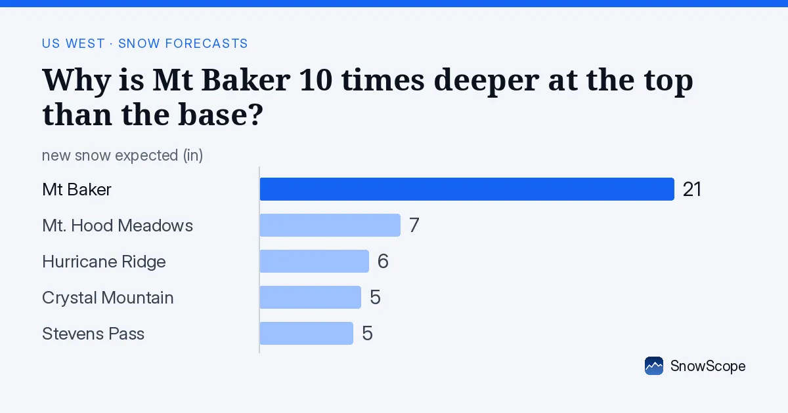
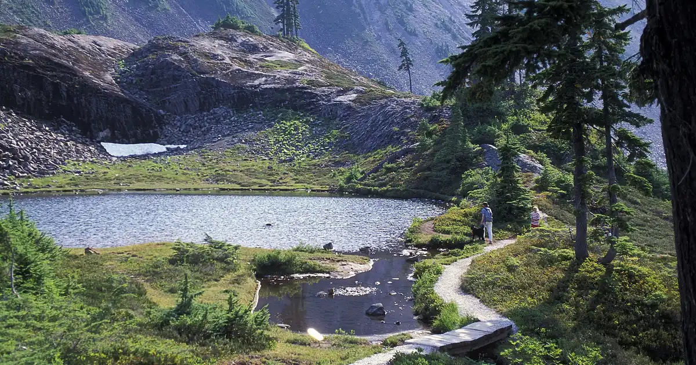
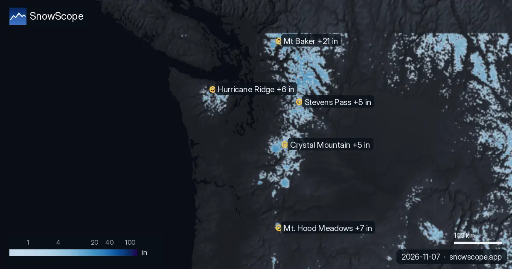
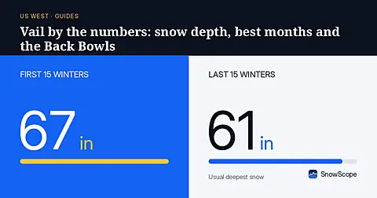

Why is Mt Baker 10 times deeper at the top than the base?
Why does Mt Baker's summit have 10 times more snow than its base, and what does the forecast tell us about where water is building up in the mountains? Early season snow is thin and uneven. The next three days will bring new snow at different elevations—some as rain—so the height gap will shift in ways that matter for water storage.
See the live snow forecast for Mt Baker in the SnowScope appSnow depth, powder alerts and the 3D map, free.
What we're seeing now
Mt Baker's snowpack shows a clear pattern: depths vary dramatically with elevation. Satellite images from November 4 show snow on the mountain, but the water storage is not evenly spread. Our model estimates show 8 in (21 cm) of snow at the summit (5,105 ft (1,556 m)), 4 in (11 cm) at mid-slope (4,370 ft (1,331 m)), and less than 1 in (2 cm) at the base (3,628 ft (1,106 m)). The upper slopes average 17 in (44 cm), but that hides the sharp drop as you descend.
This uneven spread is typical in early season. Cold air at high elevations means snow survives. Warm air at lower elevations means melting and less accumulation. We have a measurement from Wells Creek station, 4,039 ft (1,231 m), 5.7 mi (9.2 km) away, showing 5 in (13 cm) on November 1, but that station sits between the summit and base, so it doesn't capture the extremes.
| Resort | Snow depth | New snow, 72 h | Coming, next days | Top |
|---|---|---|---|---|
| Mt Baker | 17 in (44 cm) | 13 in (32 cm) | 21 in (53 cm) | 5,105 ft (1,556 m) |
| Mt. Hood Meadows | 15 in (38 cm) | 3 in (7 cm) | 7 in (18 cm) | 7,303 ft (2,226 m) |
| Hurricane Ridge | 6 in (15 cm) | 2 in (4 cm) | 6 in (14 cm) | 5,446 ft (1,660 m) |
| Crystal Mountain | 10 in (26 cm) | 2 in (5 cm) | 5 in (13 cm) | 6,798 ft (2,072 m) |
| Stevens Pass | 11 in (28 cm) | 3 in (7 cm) | 5 in (12 cm) | 5,666 ft (1,727 m) |

How the forecast reshapes this
The next three days will shift this height gap. On November 8, our model shows 11 in (29 cm) of new snow falling on Mt Baker—the heaviest day ahead. November 9 stays drier with 1 in (2 cm). November 10 brings 9 in (22 cm) more. That's 21 in (53 cm) of new snow at upper elevations in just three days.
But elevation determines whether that falls as snow or rain. The freezing level—the height where air temperature reaches zero—will drop steeply. On November 8, it falls from 5,348 ft (1,630 m) to as low as 3,281 ft (1,000 m). This means precipitation at Mt Baker's base falls as rain, not snow, while mid and upper slopes catch snow. That splits where new water gets stored.

Freezing levels and water storage
As a hydrologist, I think of snow as water locked in the mountains. Where that water lands depends on the freezing level. On November 7, the freezing level ranges between 5,971 ft (1,820 m) and 9,252 ft (2,820 m)—so precipitation at Mt Baker falls partly as rain. By November 8, the level drops, and the freezing line sinks lower, allowing mid and upper slopes to catch snow. November 9 warms again, raising the freezing level back to 6,824 ft (2,080 m).
Rain at the base runs off or sits on thin snow. Snow at higher elevations accumulates and survives longer. Over the next week, Mt Baker's mid and upper elevations will gain significant depth, while the base stays thin.
The regional pattern
Mt Baker is not alone. Mt. Hood Meadows, to the south, has 15 in (38 cm) on upper slopes but 0 in (0 cm) at the base—an even sharper gap. Hurricane Ridge has 6 in (15 cm) on upper slopes. Crystal Mountain has 10 in (26 cm) on top. Stevens Pass has 11 in (28 cm). All will gain snow in the next days, but height gaps will persist because of how freezing levels work.
What to expect
If you're heading to Mt Baker, focus on mid and upper elevations for the next few days. Upper slopes will see significant new snow on November 8 and 10. Lower elevations may see rain mixed with snow, so consolidation will follow. Early season snow is always thin—even 8–12 in (20–30 cm) at the top can have rocks or hard ground underneath—so stay aware of what's under your skis.
Tips for skiers
- Head to mid and upper elevations, above 4,370 ft (1,331 m), on November 8 to find the heaviest new snow. The base may see rain instead.
- November 9 is a drier window; consider that day for travel if conditions on the 8th are too unstable or if consolidation is happening.
- November 10 brings another 9 in (22 cm) of new snow at upper elevations, so plan for changing conditions through the period.
- Rocks and hard ground are common under thin early-season snow even when depth looks decent. Check what is underneath before committing to steep terrain.
- Watch official avalanche forecasts if venturing off-piste, especially with rapid snow accumulation and variable freezing levels.
About these numbers
Resort snow depths are the deepest snow on the resort's upper slopes from the SnowScope snow model (about 1 km, run of 6 November); they are estimates for an area, not a measurement at one point. Station values are measurements on the date shown. Forecasts can change. Always read the official avalanche bulletin before going off-piste.
Official avalanche bulletins: avalanche.org
Cite this report
For research, teaching or the press: the numbers and charts are free to reuse under CC BY 4.0 with this citation.
SnowScope (2026), Why is Mt Baker 10 times deeper at the top than the base?, https://snowscope.app/blog/en/2026/11/us-west-snow-forecast-7-november-2026.html, accessed 2026-11-07
SnowScope (Atlas Labs). (2026, November 7). Why is Mt Baker 10 times deeper at the top than the base?. SnowScope snow reports. https://snowscope.app/blog/en/2026/11/us-west-snow-forecast-7-november-2026.html
BibTeX
@misc{snowscope2026uswestsnowforecast7novem,
author = {{SnowScope (Atlas Labs)}},
title = {Why is Mt Baker 10 times deeper at the top than the base?},
year = {2026},
month = nov,
howpublished = {\url{https://snowscope.app/blog/en/2026/11/us-west-snow-forecast-7-november-2026.html}},
note = {Published 2026-11-07 15:30 UTC; accessed 2026-11-07}
}· CC BY 4.0 · Methods, data and tools →
Mt Baker: snow and temperature by height, this winter vs last (tools) →
Follow Mt Baker
Free: a message when fresh snow is coming, and the forecast every morning.
More snow reports

Rain will replace snow at Mt Baker on November 6, as the freezing level climbs to 8,957 ft (2,730 m), far above the ski area.

Mt Baker will receive 16.5 in (42 cm) of new snow through November 8, leading the US West, based on our model run on November 5.

Vail in numbers: a usual peak of about 64 in (162 cm) at mid-mountain over 46 past winters, March the deepest month, plus terrain, access and safety.